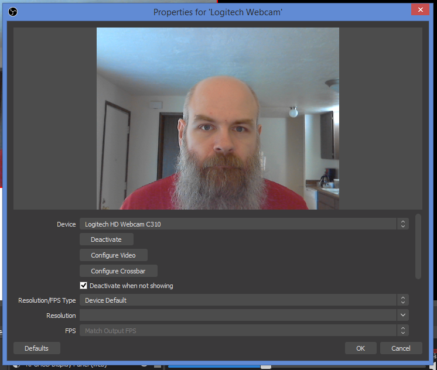
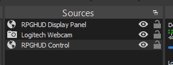
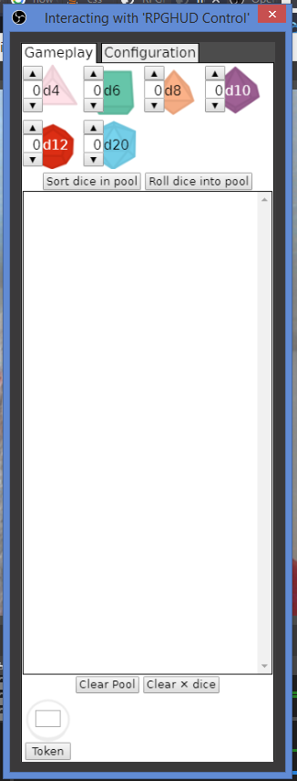
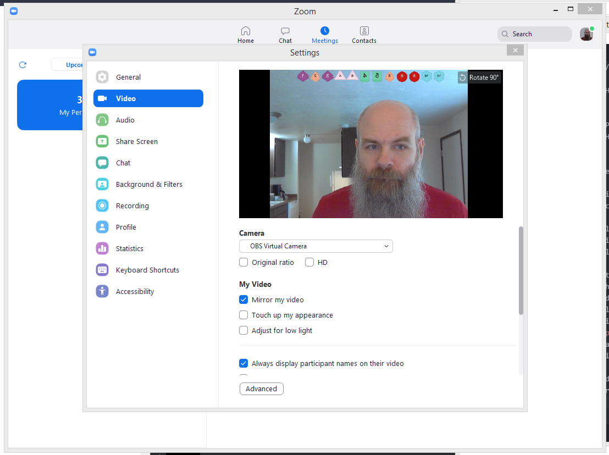

This is RPGHUD, a dice-rolling app that overlays your video feed for use playing RPGs over video chat. The idea is that you can be "heads up" looking at the other players (and their dice-results) and not down at a map-based virtual tabletop. This version is meant to work with OBS, the software used by most videogame streamers, which can composite video and output to a "virtual camera" that can be used by a video chat app like Zoom.
This is currently in alpha-testing. You can use it, and I'll endeavor to keep it functional, but I can't promise there are zero bugs. If you have feedback (either bug reports or more general stuff) I'm open to hearing it (I have a firstname.lastname style gmail adress, or find me on twitter @DanMaruschak).
To use it, you'll need to download OBS if you haven't already, and then set up a scene.
1. You'll probably want to set up a "profile" to use with a virtual camera, since you'll probably want to use a different resolution than you would for streaming or recording videos.
2. Create a scene for your RPGHUD output.
3. Add a "Browser" source to the scene for the RPGHUD Display Panel.
URL: https://danmaruschak.github.io/RPGHUD/obsdisplay.html
Width: 1280
Height: 720
4. Add a second "Browser" source for the RPGHUD Control Panel.
URL: https://danmaruschak.github.io/RPGHUD/rpghud.html
Width: 300
Height: 850
5. Add a "Video Capture Device" for your webcam.

6. If necessary, resize and reposition the output of your webcam in the scene so goes from the top to the bottom and is centered in the scene.
7. If necessary, resize the "display" source to cover 100% of the scene.
8. Reposition the "control" source so that it's offscreen or hidden behind your camera output (it needs to be included in the scene so the javascript that controls it can communicate with the javascript in the display panel, but you don't want it to actually be seen by the other participants).
9. Order the sources so the Display is on top (so the dice can be seen), your webcam next, then control (so it can be hidden behind you camera).
10. Right-click on the "Control" source and select "Interact". This will pop up a window which lets you use the controls in the control panel to roll dice. Resize this to be a tall, narrow window that you can have off to the side while you're using your video chat.
11. Now you can press the "Start Virtual Camera" button, which will let you add the virtual camera as an input to a video chat program like Zoom. (Unfortunately minimizing the OBS window also minimizes the control panel interact window, but you can hide the OBS window behind your video chat app or reposition the window so it's mostly offscreen).
12. You might want to turn off "Mirror My Video" in the Zoom settings. Apps like Zoom know that humans are only used to seeing themselves when they look in a mirror, if it showed you what the camera was actually showing to the rest of the world you would look "weird" to yourself, so when you see your own video feed in the app it usually does a left-right flip like what happens when you look in a mirror. But with the dice overlayed the numbers will look backwards to you. For the most part you'll be interacting with your own dice in the control panel window so it won't matter what your dice look like to you in your video feed, but seeing backwards numbers can be uncomfortable (but so can seeing non-backwards video of yourself, so you need to pick which one is least bad for you). Even when your video is mirrored for you the app doesn't mirror what it sends out to the other participants in the call, so the numbers they see on the dice won't be backwards.
13. This isn't obvious, but if you go to the "configuration" pane in the controls page, if you right-click on the dice controls it brings up a popup menu that lets you select some pre-set autoconfigurations for some indie RPG classics like Dogs in the Vineyard and My Life with Master.